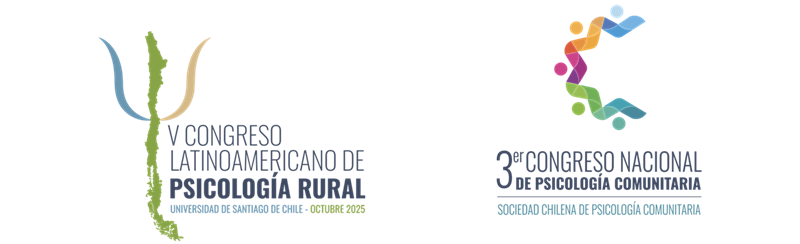

V Congreso Latinoamericano de Psicología Rural & III Congreso Nacional de Psicología Comunitaria
Fechas: 7 al 9 de octubre de 2025
Sedes:
- Martes 7: Campus USACH – Estación Central (L1 METRO ESTACION CENTRAL)
- Miércoles 8 y Jueves 9: CEPEC USACH – Apoquindo (L1 METRO ESCUELA MILITAR)
Bienvenidas y Bienvenidos a este V Congreso Latinoamericano de Psicología Rural y III Congreso Nacional de Psicología Comunitaria. Este evento ha sido diseñado como un espacio crucial para la reflexión y el intercambio de conocimientos. Está dirigido a académicos, profesionales, líderes comunitarios y actores sociales con el interés de construir propuestas concretas para avanzar hacia la justicia social y ambiental en comunidades tanto rurales como urbanas de América Latina.
Agradecemos profundamente su participación y el compromiso con los saberes y experiencias que hacen posible este encuentro. Esperamos que las discusiones de estos días no solo fortalezcan la disciplina, sino que también inspiren nuevas colaboraciones y acciones transformadoras.
Información General:
- Acreditación: martes 7 de octubre, de 09:00 a 15:30.
- Actividades con inscripción previa: Algunas actividades como los talleres y las visitas a territorios tienen cupos limitados y requieren inscripción previa.
Ejes Temáticos del Congreso:
- Eje 1: Pueblos indígenas y afrodescendientes: saberes ancestrales, comunidades rurales y prácticas comunitarias
- Eje 2: Crisis sistémicas, sostenibilidad y transformaciones socioambientales en territorios rurales y urbanos
- Eje 3: Mujeres, cuidados y territorios: experiencias comunitarias, urbanas y rurales en resistencia
- Eje 4: Diversidades, ciclos vitales y territorios: reconocimiento e inclusión de sujetos históricamente invisibilizados
- Eje 5: Trayectorias de la Psicología Rural en Latinoamérica
- Eje 6: Trayectorias y horizontes emergentes de la Psicología Comunitaria en Latinoamérica: desarrollos, desafíos y transformaciones